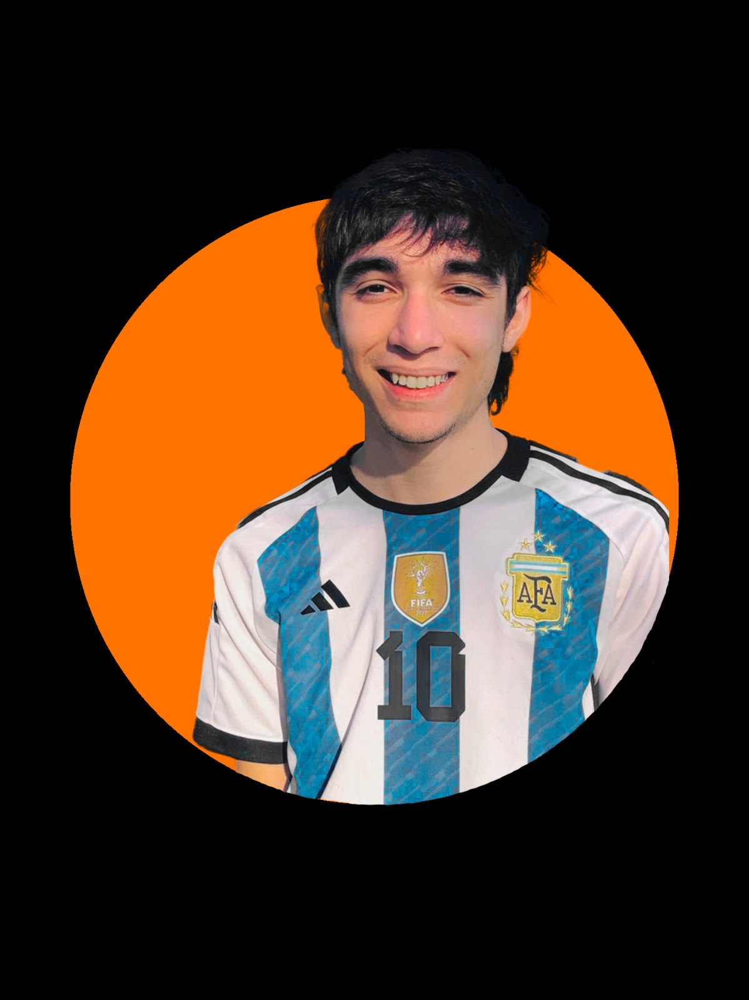

Portafolio
Home
Portafolio
Sobre mi
Contactos
Acerca de
¿Por donde contactarme?
A continucacion voy a estar dejando mis redes sociales, donde ahi compartire, tanto como fotos o actividades de la academia,
Pagina creada por
Descargar CV
